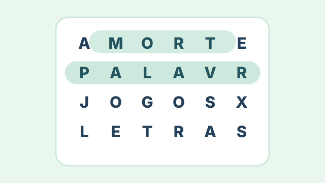
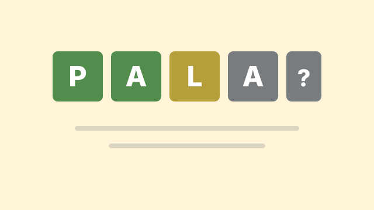
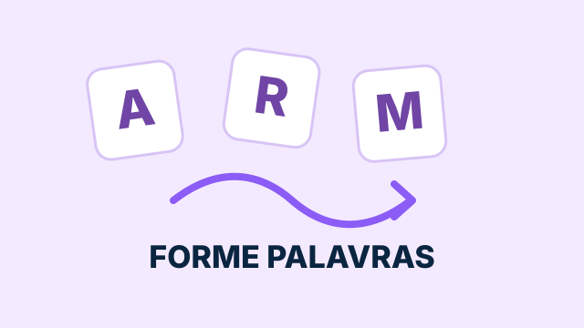
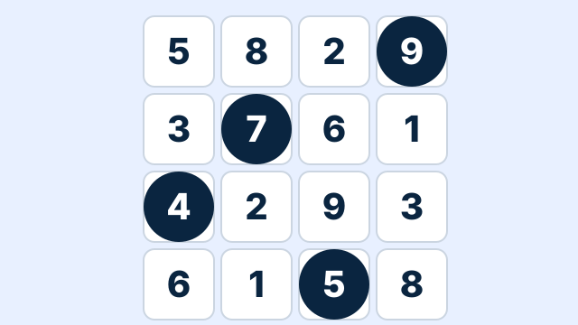
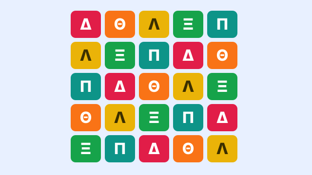
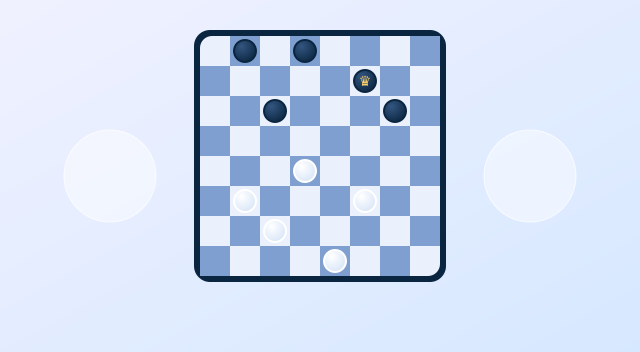

SEU PRÓXIMO DESAFIO COMEÇA AQUI
Jogos de palavras
para desafiar a mente.
Teste seu vocabulário, descubra palavras e encontre seu novo jogo favorito. Grátis, direto no navegador.
Explorar jogos
ESCOLHA SUA EXPERIÊNCIA
Todos os jogos
Jogo da Forca
Descubra a palavra secreta antes que suas chances acabem.
Jogar agora →
Caça-palavras
Encontre palavras escondidas em uma grade cheia de letras.
Jogar agora →
Termo
Use as pistas de cada tentativa para encontrar a palavra.
Jogar agora →
Anagrama
Combine letras embaralhadas e descubra quantas palavras consegue formar.
Jogar agora →
Kyudoku
Marque 9 números diferentes em um tabuleiro 6×6 sem passar de 9 por linha e coluna.
Jogar agora →
Lógica grega
Posicione as letras gregas sem repetir em linhas, colunas e nas duas diagonais.
Jogar agora →
Damas
Enfrente o computador com as regras brasileiras: capture, vire dama e vença.
Jogar agora →Uma pausa divertida para sua mente
Escolha um jogo, desafie seu vocabulário e volte sempre para descobrir novas formas de jogar.